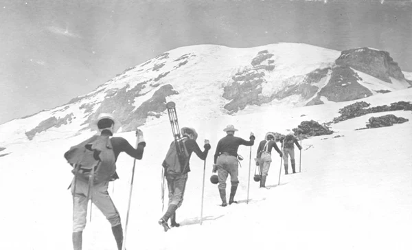

Home |
| | Attractions |
| | Lodging |

Skiing has been part of this area for more than 50 years. In 1938, the Silent Creek Ski Club obtained a special permit from the U.S. Forest Service enabling them to build cabins and trails in the Silent Creek region. Young businessmen Aaron Jones and Arnold Zachary quickly recognized the area’s potential and shortly after World War II, began efforts to develop a full-fledged ski resort on the mountain. The natives in the area call it Le Sommet Muet,which of course means "Silent Summit". They gave it this name because of the consistant weather on top of the mountain. No wind and no storms, just calm.
Designed by Carter Graves 2024